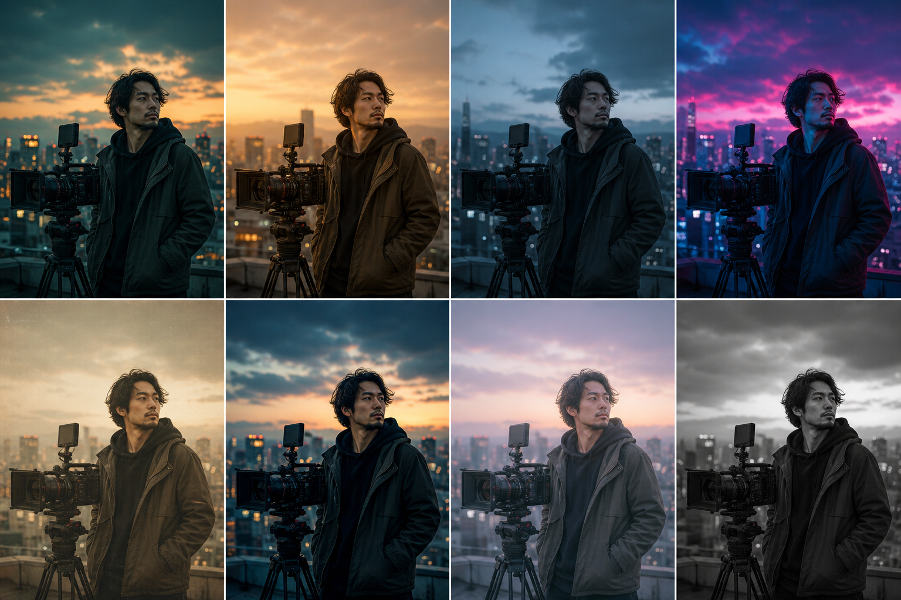
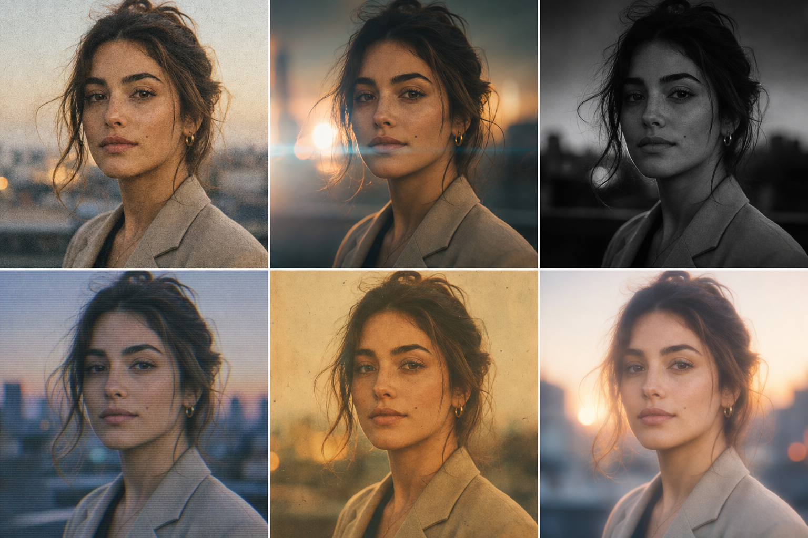

01
生成規則・流程・工具
開始之前：選用合適工具、遵循流程、遵守規則。每一步都有原因。
人手把關 :對外作品必須經人手 review 後才可發布。AI 是草稿引擎，不是最終審核授權先行 ：客戶人像、品牌素材、第三方圖片未取得授權時，一律不可輸入 AI 工具可追溯紀錄 ：每個 final 交付都記錄「工具 + 模型版本 + 完整 prompt + seed」，方便客戶修改時重現
Claude / ChatGPT ：發想 concept、把中文需求擴寫成詳細英文 prompt、撰寫文案Higgsfield :AI 影片生成、運鏡控制、image-to-video 動態化Artlist :授權素材、配樂音效、AI 圖像生成HeyGen :AI 數字人、口播影片、多語配音翻譯
面容一致、膚色自然、不變形、不偏色
手指肢體正常、動作自然流暢
解析度達交付規格(社群至少 1080p,廣告 4K)
構圖乾淨、沒有 AI 浮水印殘留
1 定需求 用途、平台、比例(16:9/9:16/1:1)、秒數、風格、情緒
2 寫 Prompt 用 Claude/GPT 按六元素公式擴寫，並保留中英文版本
3 生成 先用低解析度或短秒數測試 3-4 版，以節省 credit
4 篩選修正 按照 §10 checklist 逐項檢查，微調 prompt 後再生成
5 交付 升級至 4K、轉成可編輯設計，prompt 連同成品存入檔案庫
02
如何選擇模型 · Model Primer
不同模型不是互相取代，而是分工接力。先選任務層，再選工具；版本、seed、prompt 一律保留紀錄。
一條影片的模型接力
Brief LLM 先拆需求、寫 concept、shot list、中文轉英文 prompt。
Still 圖像模型先鎖定 key visual、角色、產品與背景，生成可控首格。
Motion 影片模型負責 image-to-video，為已確認的畫面加入運鏡與動作。
Human 口播、avatar、lipsync 交給數字人模型；不要用一般影片模型勉強生成對白。
Finish 最後再做 upscale、去背、補幀、配音、字幕與設計轉檔。
選擇模型之前，先回答三個問題
輸入是什麼？ 文字、參考圖、首尾格、角色相、產品圖。最需要避免什麼錯誤？ 面容、手部、文字、品牌色、logo、動作自然度。交付物是什麼？ 概念圖、海報、5 秒 shot、30 秒片、口播、可編輯設計。 公司記錄格式： 工具 / 模型名稱 / 模型版本或模式 / prompt / negative prompt / reference / seed / ratio / credit 用量 / 生成日期。
01 LLM 文字與策略模型 適合做 concept、腳本、shot list、prompt 擴寫、風格詞翻譯。它不負責生成圖片，但負責讓生成模型理解需求。
輸入：客戶 brief、品牌資料、參考圖描述 輸出：可複製的中英 prompt、QC checklist 02 Image 圖像生成模型 先做首格、角色定裝、產品主視覺。若畫面尚未穩定，不要急於生成影片。
重點：比例、構圖、人物一致、品牌色 常用：reference image + 固定描述 + seed 03 Video 影片 / I2V 模型 最穩定的做法是先圖後片。影片模型擅長運鏡、環境動勢、短秒數 motion；複雜劇情要拆 shot。
輸入：首格圖、end frame、motion prompt 限制：一個 5 秒 shot 只要求一個主要動作 04 Avatar 數字人與口播模型 要準確對白、唇形、多語配音，交給 avatar / lipsync workflow。一般影片模型只做視覺氣氛，不負責說話。
適合：CEO message、教學、產品介紹 留意：授權、聲音、字幕與語氣一致 05 Utility 後製修補模型 去背、放大、補幀、降噪、局部修補、設計 brief 反推，全部屬於 finishing layer。
適合：已接近交付但需要修整細節 不適合：用來修補方向錯誤的初稿
02
Prompt 撰寫方法
AI 不會讀心。一條好的 prompt 需要清楚交代六件事，並按順序描述。
逐一填寫元素；每缺少一項，AI 就會自行補充，而自行補充往往是畫面偏離的開始：
① 主體 誰或什麼（年齡、性別、特徵）② 動作/姿態 正在做什麼、如何進行（速度、幅度）③ 環境 地點、時間、前景／中景／後景內容④ 鏡頭 景別、角度、運鏡、焦距⑤ 光線 方向、軟硬、色溫、光源⑥ 風格 色調、film style、情緒、參考
圖像完整範例
中 一位 30 歲女咖啡師(主體),微笑緩慢手沖咖啡、蒸氣升起(動作),溫暖木質咖啡店、背景書架虛化(環境),中近景、85mm、輕微俯角、淺景深(鏡頭),柔和側窗光、暖色溫 5600K(光線),電影感、35mm 膠片顆粒、橙啡色調、寧靜療癒(風格)EN a 30yo female barista smiling, slowly hand-brewing coffee, steam rising , warm wooden cafe with blurred bookshelf background , medium close-up, 85mm, slight high angle, shallow depth of field , soft window side light, warm 5600K, cinematic, 35mm film grain, warm brown tones , calm soothing mood
影片要加多三樣
中 影片 prompt 在六個元素之上，還需要補充：⑦ 鏡頭如何移動（運鏡，見 §04）⑧ 主體如何移動（動作節奏，見 §05）⑨ 秒數與節奏（5 秒一個動作最穩定）EN ...all six elements above + camera: slow dolly in + subject motion: pouring in circular motion + 5s, calm pacing, 24fps
YouTube / 橫片 16:9Reels / TikTok / Shorts 9:16IG Feed 1:1 或 4:5電影感橫額 21:9Stories 安全區 上下各預留約 15% 給 UI 遮擋
同一條影片需要輸出至多個平台 → 生成時主體置中 ，後製裁切最節省成本
9:16 直片不要由 16:9 裁切而成，否則構圖容易鬆散；直片應直接用 9:16 生成
字幕位置、logo 位置應在 prompt 中預留空間，並按照安全區規劃
具體量化 :寫「日落金光由右側照入」，不要寫「漂亮光線」順序分層 :主體→動作→環境→鏡頭→光→風格,AI 讀得清提供參考錨點 :指明 film style、年代、「documentary style」這類 AI 能理解的詞彙中轉英 :用 Claude/GPT 把中文需求擴寫成英文 prompt，生成工具普遍對英文理解更準確一次只改一項 ：迭代時只調整一個元素，才能判斷哪一項造成差異保留紀錄 ：成功 prompt 立即存入公司 prompt 庫，並同步記錄 seed
一句塞兩種互相矛盾風格(極簡 + 巴洛克)
只堆疊形容詞，沒有主體，也沒有動作
忽略比例：IG Reels 是 9:16，YouTube 是 16:9；比例錯誤就需要重做
把「不要」的內容寫進正面描述之中；負面要求一律放入 negative prompt
一個 5 秒鏡頭要求三個動作，AI 容易生成失敗
03
人物圖 · 確保不失真
人物最容易出問題：換臉、變色、多手指、怪姿勢。以下是四個穩定步驟與中英 prompt。
圖鎖樣 :必須使用 reference image / 角色參考圖，不要只靠文字描述外貌Seed 鎖定 :同一角色固定 seed，並使用完全一致的外貌描述段落，跨圖才會穩定固定描述 ：年齡、髮型髮色、臉型、膚色、標誌特徵（眼鏡／鬍鬚／痣）逐項寫明多角度 :要側面背面 → 一次過用 character sheet 方式生成全套HeyGen :數字人由頭到尾使用同一個 avatar ID，中途不要更換
固定顏色 ：膚色、髮色、服裝顏色每次 prompt 都重複寫明色溫鎖定 :指定 warm 5600K / neutral daylight，不要讓 AI 自由決定膚色保護 :極端光環境(霓虹/夕陽)加「natural accurate skin tone」連續鏡頭 ：同一場戲全部使用同一段光線描述，後製再統一 grade
Lv.1 文字鎖
外貌描述固定 + 固定 seed 零成本、即用 面容仍可能不穩定，適合單張，不足以支援連續鏡頭 Lv.2 定裝圖 + 角色庫 ★推薦
先生成一張定裝圖 （中景、面容清晰、造型與髮型固定）
儲存為可重用角色 ，之後每次生成直接引用這個角色
即時生效，也可讓多個角色同場；本手冊的示範片即採用此方式 Lv.3 模型訓練
用 5–20 張同一人的相片訓練專屬角色模型（約 10 分鐘）
保真度最高,適合品牌長期代言人、老闆數字分身 一人一模型，啟動成本較高
實務建議： 單張海報使用 Lv.1；一條影片或一個 campaign 使用 Lv.2；若整個品牌需要長期使用同一個面孔，再升級至 Lv.3。
正面 prompt 要寫
natural relaxed pose / 自然放鬆姿勢
anatomically correct / 解剖結構正確
five fingers each hand, both hands visible / 每手五指清晰可見
smooth natural movement / 動作流暢自然(影片) Negative prompt 放入以下項目
extra fingers, extra limbs / 多手指、多肢體
deformed hands, fused fingers / 變形手、黏連手指
distorted face, asymmetric eyes / 扭曲臉、眼睛不對稱
twisted body, unnatural pose / 扭曲身體、怪姿勢
color shift, plastic skin / 變色、塑膠感皮膚
人物穩定 prompt（整段可複製）
中 與參考圖一致的角色，面容一致，自然且準確的膚色，每隻手五指正常，放鬆自然姿勢 ‖ 負面：多手指、變形手、扭曲臉、變色、塑膠感皮膚EN same character as reference image, consistent face , natural accurate skin tone, five fingers each hand , relaxed natural pose ‖ negative: extra fingers, deformed hands, distorted face, color shift, plastic skin
04
運鏡 Camera Movement
每格都是 LIVE 動態示範，呈現鏡頭的實際移動方式。選對運鏡，影片的情緒已經完成一半。
推軌入 dolly in 鏡頭慢慢推近主體。情緒聚焦、揭示重點、營造親密或壓迫感。商業片收結最常用。
prompt 寫法:slow dolly in on subject / 鏡頭緩慢推近主體
推軌出 dolly out 由近拉遠,揭示環境全貌。常用於開場交代場景,或結尾抽離留白。
prompt 寫法:slow dolly out revealing the scene / 緩慢拉遠揭示全景
橫搖 pan 機位不動,左右掃視。跟隨橫向移動、展示寬闊環境、兩個主體之間過渡。
prompt 寫法:smooth pan left to right / 平滑由左至右橫搖
直搖 tilt 機位不動,上下掃視。由腳到頭介紹人物、由地面搖上天空製造氣勢。
prompt 寫法:tilt up from ground to sky / 由下而上直搖
環繞 orbit / arc 鏡頭圍住主體轉。產品 360 展示、人物英雄感、空間立體感必備。
prompt 寫法:camera orbiting around subject / 鏡頭環繞主體運動
跟拍 tracking shot 鏡頭跟隨主體同步移動，背景呈現流動感。適用於行走訪談、追逐與沉浸式跟隨。
prompt 寫法:tracking shot following subject / 跟隨主體移動拍攝
手持 handheld 輕微晃動,真實紀錄感。Vlog、紀錄片、緊張追逐;商業精緻片避免。
prompt 寫法:handheld camera, documentary feel / 手持鏡頭,紀實感
快速變焦 zoom / punch in 焦距快速推入,節奏感強。社群短片 hook、強調反應、喜劇效果。
prompt 寫法:fast zoom punch in / 快速變焦推入
甩鏡 whip pan 極速橫甩帶動態模糊。轉場神器,連接兩個場景,energy 爆棚。
prompt 寫法:whip pan transition / 快速甩鏡轉場
航拍升降 drone / aerial 由高空俯瞰或拉升。開場立 scale、地理交代、史詩感結尾。
prompt 寫法:aerial drone shot rising up / 航拍鏡頭緩緩拉升
運鏡組合範例
中 開場用航拍拉升交代環境 → 切至跟拍主體走進咖啡店 → 結尾緩慢推軌至面部特寫。一條 prompt 只寫一個運鏡，分成三條生成後再剪接。EN shot 1: aerial drone rising over city · shot 2: tracking shot following subject into cafe · shot 3: slow dolly in to close-up
f1.8 淺景深 shallow DOF:主體實、背景化開,人像產品必用f8-f11 深景深 deep focus:全景清晰,風景、團體、建築
慢快門 motion blur:車軌流光、動感拖影高速快門 frozen motion:凝結水花、定格跳躍
24mm 廣角 :空間張力大、輕微誇張,環境交代50mm 標準 :似人眼,自然紀實85mm 長焦 :壓縮空間、人像最漂亮,背景化開
05
主體動作設計
影片 prompt 的重點是動詞。一個鏡頭只安排一個清晰動作，並寫明速度與方向。
行走 walking 主體橫越畫面。寫明方向與速度：slowly walking left to right。配合 tracking 跟拍會更自然。
prompt 寫法:subject slowly walking across / 主體緩慢橫越畫面
轉身 turning around 主體轉向鏡頭。揭示表情、回應呼喚、劇情轉折位。寫:turns to face camera。
prompt 寫法:slowly turns to face the camera / 緩緩轉身面向鏡頭
舉手動作 raising arm 清晰單一手部動作:舉手、揮手、指向。一個鏡頭只安排一個動作，避免 AI 產生異常手部。
prompt 寫法:raises one hand to wave, five fingers / 舉起一隻手揮動,五指正常
前傾靠近 leaning in 主體向鏡頭傾前。製造親密、秘密、邀請感。配 dolly in 雙重推進更強。
prompt 寫法:leans in toward camera / 向鏡頭前傾靠近
動詞 :行、轉身、伸手、舉杯、微笑漸開速度 :slowly / gently / briskly / energetically方向 :left to right / toward camera / upward
主體靜止 → 鏡頭移動（orbit / dolly 營造氛圍）
主體移動 → 鏡頭跟隨（tracking 保持構圖）
情緒爆發位置 → 雙重推進（主體 lean in + dolly in）
商業片 :慢、穩、優雅,5 秒一個動作社群片 :首 2 秒要有 hook 動作,快而跳故事片 :張弛交替,動作之間留呼吸位
·
先圖後片 · Image-to-Video 工作流
製作公司最重要的一條流程紀律：先在「圖」階段把畫面修整到位，再讓它「動起來」。
價差巨大 :一張圖大約 0.1–1.3 credit,一條 5 秒片 7.5+ ——差成 6 至 60 倍圖像階段可以低成本迭代 5–10 個版本並選出最佳方案；到了影片階段才迭代，成本會大幅增加
構圖、人物、光線、色調全部在圖像階段鎖定，影片只負責「動起來」
① 出圖 :按照六元素公式生成 3–5 版，選出構圖最合適的一張② 設定首尾格 :選好的圖片作為 start frame（起始畫面）；如需控制運動終點，可再提供 end frame（結尾畫面）③ 動態化 :image-to-video 階段，prompt 只寫「如何移動」：運鏡 + 主體動作 + 節奏
畫面已經在圖像階段確定，不要再重複描述場景 ，否則 AI 可能會改動畫面
只寫動態:「slow dolly in, she turns to face camera, calm pacing」
希望畫面盡量不變形 → 加上「maintain composition / 保持構圖」
I2V 完整範例
中 （已上載起始圖）鏡頭緩慢推近，主體緩緩望向鏡頭微笑，保持構圖與光線，平靜節奏，5 秒EN (start frame attached) slow dolly in , she slowly looks toward camera and smiles, maintain composition and lighting , calm pacing, 5s
06
色調 Color
同一場景、八種色調，直接比較色調如何改變情緒。選定一種後，記下 prompt 寫法。

真圖色調對比 同一人物城市場景用不同 grade 會立即改變情緒。每張卡都已換成真圖，方便直接比較並複製 prompt。
橙藍 Teal & Orange
teal and orange grade / 橙藍電影調色
暖金 Golden
golden hour warm tones / 黃金時刻暖金色調
冷藍 Cold Blue
cold desaturated blue / 冷峻低飽和藍調
霓虹 Neon
neon magenta and cyan glow / 霓虹紫紅青藍光
褪色 Faded
faded vintage tones / 褪色復古色調
高反差 High Contrast
high contrast punchy / 高反差有力
柔粉 Pastel
soft pastel palette / 柔和粉彩色盤
單色 Monochrome
black and white monochrome / 黑白單色
色調如何寫入 prompt
中 色調放在 prompt 的風格段：寫「色名 + grade/tones/palette」。同一條影片的所有鏡頭使用同一段色調描述，才能避免跳色。EN ...scene description, teal and orange cinematic grade — or — soft pastel palette — or — cold desaturated blue tones
07
Film Style 質感
同一場景、六種 film style 即時對比。質感是風格的最後一層表現。

人像 Film Style 對比 Film style 用人像最容易看出質感差異：膚色、顆粒、對比、光暈、復古感與柔焦會直接影響整片氣質。
35mm 膠片 35mm film grain 細膩顆粒,溫潤質感。商業片加一層立即高級,萬用安全牌。
35mm film grain, kodak texture / 35mm 膠片顆粒質感
Anamorphic 寬幕 anamorphic 上下黑邊 + 橫向藍色光斑,立即電影院氣場。大片感、預告片必備。
anamorphic widescreen, horizontal lens flare / 變形寬銀幕,橫向光暈
黑色電影 film noir 高反差黑白 + 暗角。懸疑、復古偵探、強烈戲劇光影。
film noir, high contrast b&w, vignette / 黑色電影,高反差黑白
VHS 復古 vhs retro 掃描線 + 訊號雜訊,90 年代錄影帶。懷舊主題、復古 MV、Y2K。
vhs tape look, scanlines, analog noise / VHS 錄影帶質感,掃描線
復古菲林 70s faded vintage 褪色暖調 + 漏光。舊相簿回憶感、情懷敘事、咖啡店品牌。
vintage 70s faded film, light leaks / 70 年代褪色膠片,漏光
夢幻柔焦 dreamy soft 輕微柔焦 + 高光泛光。婚禮、香水、浪漫回憶片段。
dreamy soft focus, glowing halation / 夢幻柔焦,光暈泛光
Film style 如何寫入 prompt
中 Film style 放在 prompt 最後。一條影片選一種即可，兩種質感疊加容易互相衝突。若要更穩定，可以加入「shot on」句式。EN ...mood description, shot on 35mm film, fine grain — or — anamorphic widescreen, lens flare — or — vhs analog tape look
·
多鏡頭敘事 · 由分鏡到完整影片
AI 很難用一條 prompt 生成完整 30 秒廣告。正確做法是拆成 shot、逐條生成、再剪接，流程與傳統製作相同，只是攝影機換成了生成模型。
30 秒廣告 = 6 個 5 秒 shot ,每個 shot 一個動作一個運鏡
按照片種節奏：商業片 5 秒一拍；社群片首 2 秒加入 hook
每個 shot 寫一行 shot list：景別／運鏡／動作／秒數，先寫完整再生成
① 同一角色 ：全部 shot 引用同一個定裝角色（Lv.2）② 色調原句照抄 :色調 + film style 那段文字，逐字保持一致③ 光向一致 ：同一場戲寫同一個光源方向與色溫
以 whip pan 收尾的 shot 接上以 whip pan 開頭的 shot，可形成無縫轉場
相似構圖 cut（match cut）：兩個 shot 的主體放在同一位置
生成時每條影片頭尾預留半秒緩衝，剪接時才有修整空間
影片模型的 sound 開關 ：示範片或會另行配樂的影片建議關聲 生成，可節省 credit，也避免雜音
口播/對白 :不要要求生成模型直接產生對白，交給 HeyGen 數字人 + lipsync，口型會更準確配樂音效 :從 Artlist 授權庫選擇，版權較清晰；AI 生成音樂的商用授權需要逐個工具查核聲音也應寫入 prompt：需要環境聲就寫明（雨聲、街道 ambience），不需要就 sound off
08
常用風格參考庫 · 40 款
每款包含示意圖、中文 prompt、英文 prompt。點選分類篩選後，可直接複製使用。
全部 (40)
商業・廣告 (8)
電影感・故事 (9)
社群短片 (7)
人物 (6)
產品・圖象 (5)
動畫・風格化 (5)
商業・廣告
#01 商業淨白極簡白底產品廣告,柔和影樓燈,乾淨。
中 純白無縫背景,柔光箱影樓燈,極簡商業產品照,高調明亮,陰影乾淨利落
EN clean white seamless background, soft studio softbox lighting, minimal commercial product shot, high key, crisp shadows
商業・廣告
#02 奢華質感黑金高級感,聚光打在主體,戲劇陰影。
中 黑金奢華氛圍,單一戲劇性聚光燈,深邃陰影,高級產品,光澤反射
EN luxury black and gold aesthetic, single dramatic spotlight, deep shadows, premium product, glossy reflection
商業・廣告
#03 生活風格自然光居家場景,溫暖隨性,真實生活感。
中 生活化場景,溫暖自然窗光,隨性抓拍,溫馨家居室內,真實日常時刻
EN lifestyle scene, warm natural window light, candid, cozy home interior, authentic everyday moment
商業・廣告
#04 科技未來藍青冷調,霓虹邊光,玻璃與金屬反射。
中 未來科技感,藍青冷色調,霓虹邊緣光,玻璃金屬反射,流線俐落
EN futuristic tech aesthetic, cyan and blue tones, neon rim light, glass and metal reflections, sleek
商業・廣告
#05 美食特寫微距美食,蒸氣與水珠,淺景深垂涎欲滴。
中 微距美食攝影,蒸氣升騰,水珠細節,淺景深,引人食慾,柔和側光
EN macro food photography, steam rising, water droplets, shallow depth of field, appetizing, soft side light
商業・廣告
#06 極繽紛高飽和撞色,平面波普,活潑年輕。
中 高飽和流行色,大膽撞色色塊,活潑俏皮,平面圖形背景,年輕氣息
EN vibrant pop colors, high saturation, bold color blocking, playful, flat graphic background, youthful
商業・廣告
#07 北歐簡約低飽和原木米白,留白多,寧靜質感。
中 北歐極簡,低飽和大地色,原木麻布質感,大量留白,寧靜柔和日光
EN scandinavian minimal, muted earth tones, wood and linen, lots of negative space, calm, soft daylight
商業・廣告
#08 黑白經典高反差黑白,顆粒質感,永恆優雅。
中 經典黑白,高反差單色,細膩膠片顆粒,永恆優雅
EN classic black and white, high contrast monochrome, fine film grain, timeless, elegant
電影感・故事
#09 電影膠片anamorphic 寬幕,橙藍色調,膠片顆粒。
中 電影感寬銀幕,橙藍分級調色,35mm 膠片顆粒,鏡頭光暈,淺景深
EN cinematic anamorphic widescreen, teal and orange grade, 35mm film grain, lens flare, shallow depth
電影感・故事
#10 黑色電影硬光百葉窗陰影,低調照明,神秘。
中 黑色電影風,百葉窗硬光陰影,低調照明,陰鬱神秘,強烈明暗對比
EN film noir, hard venetian blind shadows, low-key lighting, moody, dramatic chiaroscuro, mystery
電影感・故事
#11 黃金時刻日落逆光,金色霧氣,鏡頭光斑。
中 黃金時刻逆光,溫暖朦朧光暈,太陽光斑,夢幻柔焦散景,浪漫
EN golden hour backlight, warm hazy glow, sun flare, dreamy, soft bokeh, romantic
電影感・故事
#12 賽博龐克霓虹雨夜,紫紅青藍,反射濕地面。
中 賽博龐克霓虹都市,雨夜,紫紅青藍光暈,濕滑反光街道,銀翼殺手氛圍
EN cyberpunk neon city, rainy night, magenta and cyan glow, wet reflective streets, blade runner mood
電影感・故事
#13 史詩奇幻壯闊風景,體積光,宏大冒險氣勢。
中 史詩奇幻地景,體積光神聖光束,宏大尺度,壯闊冒險感,戲劇性天空
EN epic fantasy landscape, volumetric god rays, vast scale, sweeping adventure, dramatic sky
電影感・故事
#14 復古菲林70 年代褪色暖調,漏光,懷舊。
中 70 年代復古膠片,褪色暖調,漏光效果,柯達懷舊質感,顆粒感
EN vintage 70s film, faded warm tones, light leaks, nostalgic, kodak portra, grainy
電影感・故事
#15 懸疑驚悚冷藍暗調,霧氣,不安張力。
中 懸疑驚悚氛圍,冷峻低飽和藍調,霧氣瀰漫,緊張不安,昏暗陰森
EN suspense thriller, cold desaturated blue, fog, tense atmosphere, dim, ominous
電影感・故事
#16 溫馨家庭柔焦暖光,淺金色調,親密溫情。
中 溫馨家庭時刻,柔和暖光,淺金色調,親密溫情,舒適柔軟
EN heartwarming family, soft warm light, gentle golden tone, intimate, cozy, tender mood
電影感・故事
#17 黑暗哥德深沉陰影,燭光,巴洛克華麗陰鬱。
中 黑暗哥德風,深沉陰影,搖曳燭光,巴洛克華麗陰鬱,戲劇張力
EN dark gothic, deep shadows, candlelight, baroque ornate, brooding, dramatic
社群短片
#18 Vlog 自然手持自然光,真實隨性,直拍親近感。
中 Vlog 風格,手持自然光,真實隨性,自拍視角親切感,明亮通透
EN vlog style, handheld natural light, authentic candid, selfie angle, relatable, bright
社群短片
#19 ASMR 質感超近特寫,柔光,細節質感觸感強。
中 ASMR 超近特寫,柔光擴散,極致紋理細節,觸感療癒,微距
EN asmr close-up, soft diffused light, extreme texture detail, tactile, satisfying, macro
社群短片
#20 動感快剪高能量,鮮明色彩,運動模糊節奏感。
中 高能量動感,鮮明色彩,運動模糊,快節奏,潮流有力
EN high energy dynamic, vivid colors, motion blur, fast-paced, punchy, trendy
社群短片
#21 Y2K 復古千禧年數碼感,金屬粉藍,故障特效。
中 Y2K 千禧美學,金屬粉藍,早期數碼感,故障特效,2000 年代懷舊
EN y2k aesthetic, metallic pink and blue, early digital, glitch effects, nostalgic 2000s
社群短片
#22 療癒清新柔和粉彩,自然元素,平靜放鬆。
中 療癒清新美學,柔和粉彩,自然元素,平靜放鬆,輕盈通透
EN aesthetic clean girl, soft pastel, natural elements, calming, fresh, airy
社群短片
#23 街頭潮流都市街景,大膽塗鴉,潮流嘻哈。
中 街頭潮流風,塗鴉背景,大膽嘻哈,粗糲都市感,潮流時尚
EN streetwear urban, graffiti backdrop, bold, hip hop, gritty city, trendy fashion
社群短片
#24 食譜俯拍正上方俯拍,平鋪構圖,明亮均勻。
中 正上方俯拍平鋪,食譜構圖,明亮均勻光,整齊有序,乾淨
EN overhead flat lay, top-down, recipe layout, bright even light, organized, clean
人物
#25 專業人像柔光環形燈,乾淨背景,自信專業。
中 專業形象照,柔和環形燈,乾淨背景,眼神銳利,自信專業
EN professional headshot, soft ring light, clean background, sharp eyes, confident, corporate
人物
#26 環境人像情境中人物,自然光,故事感氛圍。
中 環境人像,人物置於工作情境中,自然光,敘事氛圍感
EN environmental portrait, subject in context, natural light, storytelling, atmospheric
人物
#27 時尚編輯高級時裝,戲劇造型,雜誌封面感。
中 高級時裝編輯風,戲劇化造型,雜誌封面質感,大膽姿態,影樓閃燈
EN high fashion editorial, dramatic styling, magazine cover, bold pose, studio strobe
人物
#28 自然紀實真實情緒,未擺拍,紀實抓拍。
中 紀實人像,真實情緒流露,未經擺拍,新聞攝影誠實感
EN documentary portrait, raw emotion, unposed, candid, photojournalistic, honest
人物
#29 柔美夢幻柔焦光暈,粉嫩色調,浪漫唯美。
中 夢幻柔美人像,光暈柔焦,粉嫩色調,浪漫空靈,溫柔
EN dreamy soft portrait, glowing halation, pastel tones, romantic, ethereal, gentle
人物
#30 戲劇光影單側硬光,深陰影,雕塑感立體。
中 戲劇性人像,單側硬光,深邃陰影,雕塑立體感,倫勃朗光
EN dramatic portrait, single hard side light, deep shadow, sculptural, rembrandt lighting
產品・圖象
#31 懸浮產品產品懸空,純色背景,陰影投射。
中 懸浮產品,純色背景,漂浮失重感,投影陰影,乾淨影樓
EN floating product, solid color background, levitating, drop shadow, clean studio
產品・圖象
#32 水花飛濺高速凝結水花,動感,清涼質感。
中 高速水花攝影,凝結液體瞬間,動感飛濺,清涼水珠
EN splash photography, frozen liquid, high speed, dynamic, refreshing, droplets
產品・圖象
#33 等距插畫等距 3D 風,柔色,可愛幾何。
中 等距 3D 插畫,柔和配色,可愛幾何造型,乾淨俏皮
EN isometric 3d illustration, soft colors, cute geometric, clean, playful
產品・圖象
#34 漸變抽象柔順漸變,流體形狀,現代抽象。
中 柔順網格漸變,流體有機形狀,現代抽象,柔和光暈
EN smooth gradient mesh, fluid organic shapes, modern abstract, soft glow
產品・圖象
#35 微距細節極微距,紋理放大,抽象質感。
中 極限微距,紋理放大,抽象質感細節,精緻複雜
EN extreme macro, magnified texture, abstract detail, intricate, tactile
動畫・風格化
#36 日系動畫賽璐璐動畫,鮮明線條,動漫天空。
中 日系賽璐璐動畫,鮮明乾淨線條,戲劇性動漫天空,富有表現力
EN anime cel shaded, vibrant clean lines, dramatic anime sky, expressive, studio quality
動畫・風格化
#37 3D 皮克斯圓潤可愛 3D,柔光,溫暖角色感。
中 皮克斯風 3D,圓潤可愛,柔和全局光照,溫暖討喜角色感
EN pixar style 3d, rounded cute, soft global illumination, warm, charming character
動畫・風格化
#38 手繪水彩水彩暈染,柔邊紙質,溫柔藝術感。
中 手繪水彩插畫,柔邊暈染,紙張紋理,溫柔藝術氣息
EN watercolor illustration, soft bleeding edges, paper texture, gentle, artistic
動畫・風格化
#39 黏土定格黏土定格動畫,手作質感,溫馨童趣。
中 黏土定格動畫,手作質感,溫馨童趣,觸感可愛
EN claymation stop motion, handmade texture, cute, tactile, whimsical
動畫・風格化
#40 扁平向量扁平設計,大色塊,簡潔現代圖形。
中 扁平向量設計,大膽色塊,極簡現代幾何,乾淨俐落
EN flat vector design, bold color blocks, minimal, modern, clean geometric
·
Skill 工作流庫
把常用生成、剪片、檢查流程整理成工具卡；開始製作時選一張，按照步驟執行。
由參考圖到完整影片，每步有路線。 從一張參考圖入手，拆出首格、運鏡、角色、色調、QC 與交付。每張工具卡都是一條可重用工作線，方便團隊按照畫面流程開始製作。
16 技能卡
4 工作流類型
1 一鍵複製
∞ 可持續擴充
·
Visual Prompt Library
集中瀏覽相片與影片 prompt：先看畫面，再查看比例、來源與完整 prompt。
相 / 片分格瀏覽 每張卡保留主圖、比例、來源與完整 prompt。開會選方向時先看畫面；生成前再打開 prompt 細節。
全部
相 / Image
片 / Video
09
情緒 · 畫面背景建構
情緒 = 光 × 色 × 構圖，需要一起描述。背景以三層建構，每一層都要有明確內容。
溫馨 warm cozy 神秘 mysterious
活力 energetic 寧靜 calm serene
浪漫 romantic 緊張 tense
懷舊 nostalgic 高級 luxurious
夢幻 dreamy 憂鬱 melancholic
希望 hopeful 史詩 epic
情緒公式 :暖光 + 淺景深 = 親密;冷藍 + 大留白 = 孤獨;逆光 + 霧 = 夢幻;硬光 + 深影 = 戲劇。撰寫 prompt 時同時描述光線與色彩，情緒才會更明確。
前景 foreground:加植物/窗框/虛化物件,立即有景深中景 mid-ground：主體所在位置，光線落點後景 background:交代環境,虛化突出主體寫明材質 :木、麻布、霧、霓虹、濕地面——材質詞能強烈影響模型輸出留白 :商業圖在 prompt 中寫「negative space on left for text」，預留文字位置跨鏡一致 ：同場景的光向、色調描述應逐字沿用
情緒 + 背景完整範例
中 溫馨寧靜情緒,咖啡店室內,前景虛化綠植,中景主體站在吧台旁,後景柔焦書架,黃金窗光由左入,畫面左側留白給標題EN cozy calm mood , cafe interior, blurred plants in foreground , subject at counter mid-ground, soft bookshelf background, golden window light from left, negative space on left for headline
10
字體 Typography
字體決定氣質。一張畫面最多使用兩款字體，文字不要交給 AI 生成，後製加入才清晰且可修改。
配字原則
標題選有個性的字體，內文選易讀的字體，最多使用兩款
建立階級:標題 > 副題 > 內文,大小要拉得開
文字與背景對比要足夠（淺底深字／深底淺字）
生成時 prompt 預留白位,字後加 避免
一張畫面使用三款或以上字體
小字放在雜亂背景上會難以閱讀
字壓住人面或產品重點
叫 AI 直接生成中文字——大概率亂碼變形
11
圖像轉可編輯設計
AI 生成的是一張靜態圖。若要變成可改文字、可換色的可編輯設計稿，請按照以下四步：
1 分層生成 背景、主體、裝飾分成三條 prompt 生成，後製自由度會更高
3 入設計工具 在 Figma / Canva 中重新組合，加入真實字體、品牌色與 logo
4 向量化 圖形元素轉為 vector，放大縮小都不會起格
生成時加入「flat colors, clean shapes / 平面色塊、乾淨形狀」，扁平風格最容易在後期改色
需要放文字的圖片，prompt 寫「negative space for text / 留白位給文字」
請 Claude/GPT 把圖片反向描述成 design brief （色值、構圖、層次），再在 Figma 重建可編輯版本
品牌色需要準確 → 不要依賴 AI 猜測，應在後期填入正確 hex 色值
同一張圖需要多個比例（16:9 + 9:16 + 1:1）→ 生成時主體置中，再由後製裁切
·
成本控制 · Credit 預算
Credit 是製作成本。守住三條規則，生成成本才可控、可預算，亦可向客戶報價。
相片級圖:~0.1 credit/張
插畫/向量圖:~1.3 credit/張
5 秒標準片:~7.5 credit/條
4K / pro 模式、加聲音、加長秒數都會提高成本；唇形同步等後製功能另計
各模型價錢隨時變——以工具內即時報價為準
① 先查價 ：批量生成之前先查單價（很多工具有 cost 預覽），完成預算後才開始② 圖像階段迭代，影片階段確認 ：所有試錯都在成本較低的圖像階段完成，影片只生成已確認的畫面③ 低 spec 試版 :先用標準模式或低解析度測試，客戶確認後才升級至 4K/pro 重新輸出
概念試圖 10 張 ≈ 1–2 credits
定裝圖 + 角色庫 ≈ 0.2
正式 6 個 shot × 7.5 ≈ 45
重做 buffer（預估 1/3 不合格）≈ 15
合計 ≈ 60–65 credits — 報價時可依照此公式估算
公司守則：每個項目開始前，用上方公式估算一次 credit 預算，並寫入製作文件；完成後記錄實際用量，逐步建立自己的準確價目表。
12
注意事項
交付前最後一關。逐項檢查；未完成全部項目之前，不要對外發布。
面容一致、膚色自然、五官沒有變形
放大 200% 檢查手指、耳朵、牙齒、配飾
動作自然、沒有詭異過渡幀（影片逐格檢查一次）
顏色、光向、色溫跨鏡頭一致
解析度達規格、無 AI 工具浮水印
背景沒有亂碼文字、沒有殘影物件
工具 + prompt + seed 已存入檔案庫
未授權真人肖像、名人面孔：絕對不生成
有版權角色、品牌 logo、藝術作品：不複製
AI 生成內容按客戶合約要求標示
客戶機密素材不得上載至未簽保密協議的第三方工具
敏感題材、誤導內容、新聞造假：不承接、不製作
手指 第六隻指/黏連——放大手部逐隻數牙齒耳朵 數量形狀怪——特寫位必檢文字亂碼 背景招牌／標籤出現怪字：有文字的位置都要檢查物理穿幫 影子方向錯誤／倒影不一致／物件懸空閃爍 flicker 影片光暗跳動——全片播一次留意背景溶接 morphing 物件邊緣溶化變形：動作幅度大的幀需要逐格檢查配飾漂移 耳環、眼鏡、袖口前後幀不一致：連戲位置必須檢查
QC 口訣：放大 200%、影片逐格、有字必查、影子必對。 不合格就不要節省；重新生成一張圖只是小成本，發布後才發現問題，損失的是公司聲譽。
 Peacock manual
Peacock manual